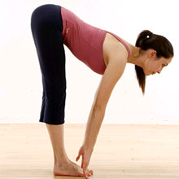
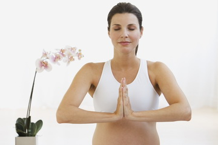
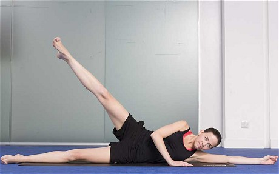

Спорт для похудения
Здоровое тело - красиво по определению. Но красоту и здоровье нужно уметь поддерживать.
Комплекс из 5-ти упражнений на все основные группы мышц поможет не только сохранить красоту, но и усовершенствовать некоторые линии и изгибы. Ведь гибкость - одна из составляющих сексуальности. А все ее преимущества уже давно известны.
Шаг 1 - разминка
Занятия спортом нужно всегда начинать с разминки. Благодаря ей мышцы начинают согреваться и, значит, никаких травм и растяжений не случится. В комплекс упражнения "на разогрев" должны входить: наклоны (прямые ноги на уровне плеч, стараемся руками достать до пола), махи руками.
20 минут - и тело готово к тому, чтобы расходовать калории, а также "подбирать" складочки и формировать соблазнительные мышцы там, где недавно был жирок. Разминка закончилась - настоящие упражнения начались.
Примечание:
За полтора часа до занятий фитнесом следует съесть что-нибудь не очень жирное. Через два часа после тренировки - основательно подкрепиться.
Шаг 2 - упругий пресс и осиная талия
Один из самых лучших способов стать обладательницей красивого сексуального животика и такой же талии - выполнять упражнение "велосипед". Для этого нужно лечь на спину и начать крутить воображаемые педали. Начни с 1-2 подхода из 10-15 "оборотов", постепенно увеличивая их до 20-30. Чтобы создать максимальную нагрузку на мышцы живота, нужно работать всем корпусом, в то время как согнутая нога должна оставаться неподвижной. Одновременно с вращением ногами отрывай плечи, голову и шею от пола и тянись, как ты можешь, правым плечом к левому колену, и наоборот. Это создаст дополнительную нагрузку на пресс. Повторяй упражнение 10-15 раз.
Примечание: 30 минут езды на велосипеде сжигают калории, равные одному "Биг Маку" - т.е. 475 ккал.
Шаг 3 - упражнения для груди
С помощью упражнения ты надолго сможешь сохранить свою грудь упругой, привлекательной и сексуальной. Встань ровно, расправив плечи, и прижми ладони друг к другу на уровне груди. Дави одной ладонью на другую, преодолевая сопротивление. Ты будешь чувствовать, как напрягаются мышцы - это знак того, что они действительно работают.
Шаг 4 - красивые руки
Рельефные мышцы плеч выглядят не только сексуально, но и зрительно уменьшают нижнюю часть тела. С подкачанными руками любой открытый топ станет твоим секретным оружием: идеальный наряд для свидания или делового ужина. Так что в твоей фитнес программе не забудь отвести место на упражнения мышц рук. Для этого поставь ноги на ширине плеч, колени должны быть полусогнуты. Руки с гантелями вытяни перед собой (локти должны смотреть в пол). На выдохе медленно поднимай руки вверх (сгибая в локте) до тех пор, пока кисти рук не окажутся перпендикулярно полу. Повторяй упражнение по 2-3 подхода из 8-12 повторов. Гантели не должны быть тяжелыми - максимум 1,5 килограмма. Со временем увеличивай количество подходов, но не вес гантелей, а то можешь перекачать руки.
Шаг 5 - для бедер и ягодиц, от целлюлита
Ложись на бок, согни ноги, голову положи на вытянутую руку. Поднимай и опускай верхнюю ногу - сначала согнутую, затем выпрямленную. Делай 2-3 подхода по 4-8 раз в каждом, затем ляг на другой бок и проделай тоже самое другой ногой.
Примечание:
Другое эффективное упражнение - это прыжки со скакалкой.